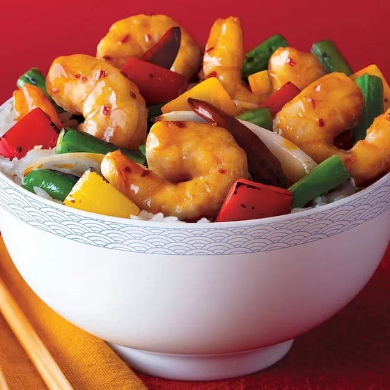

Home
Copycat Panda Express Firecracker Shrimp

Spicy, stir-fried shrimp with peppers and onions all coated in a savory
black bean sauce.
A favorite limited menu item of many at Panda Express, myself included. I
had the pleasure of trying this out over the summer last year and was
disappointed to know that it would not be staying. So naturally, I had to
try and make it myself.
Ingredients
- 2 Tbsp Vegetable Oil
- 12 oz Shrimp
- 6 Dried Chile Peppers
- 1 cup Green Beans
- 1 Red Bell Pepper
- 1 Yellow Bell Pepper
- 1 Yellow Onion
- 1 Garlic Clove
- 1 Tbsp Ginger
- 1 Tsp Red Pepper Flakes
- 2 Tsp Chinese Black Bean Sauce
- 1 Tsp Toasted Sesame Oil
- 1 Tbsp Cooking Rice Wine
- 1 Tbsp Cornstarch
- 1 Tbsp Water
- 1 Tsp Sugar
Steps
-
Place shrimp in a re-sealable plastic bag. Stir together other
ingredients in a small bowl. Pour mixture over shrimp and seal bag.
Refrigerate up to 4 hours or until cooking time.
-
Heat vegetable oil in a large wok (or nonstick skillet) until very hot.
Add marinated shrimp and quickly cook over high heat, stirring
constantly, until shrimp is just cooked through and turns opaque in
color, about 1 to 2 minutes. Remove shrimp with a slotted spoon to
serving dish and keep warm.
-
Add bell peppers, onion, green beans, dried chile peppers, garlic and
ginger, red pepper flakes, black bean garlic sauce and 1 Tbsp. water to
wok. Cook over high heat, stirring frequently, about 2 minutes.
-
Add shrimp back to wok and cook, stirring constantly, 2 minutes longer
or until sauce has thickened and is bubbling. Stir in sesame oil just
before serving. Serve hot with rice or noodles.